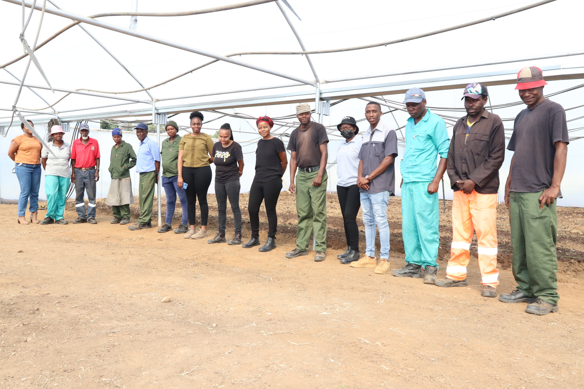
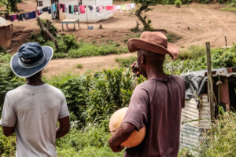
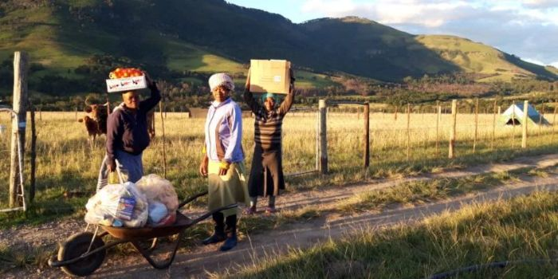
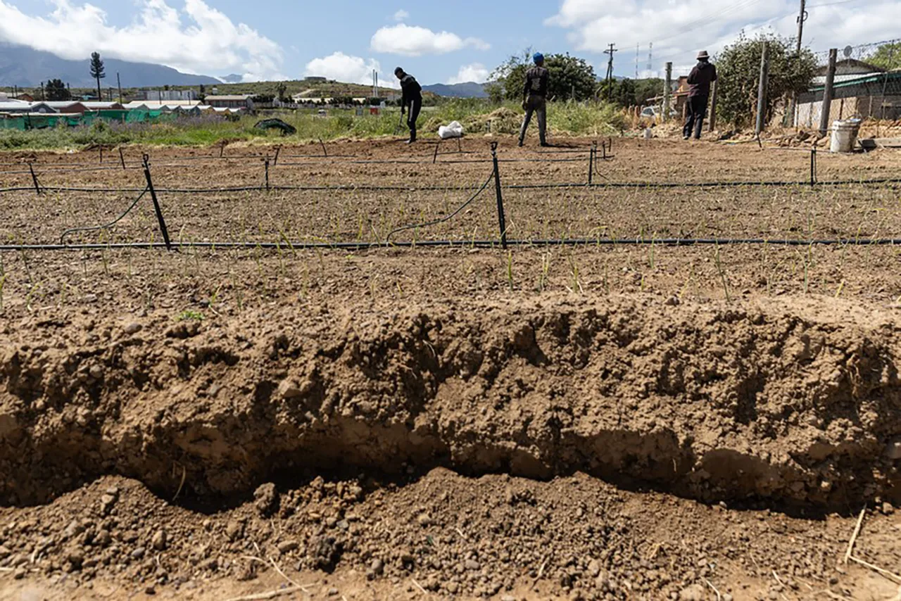

Case Studies: South African Community Gardens
Real examples of how climate change is affecting food gardens across the country

Phumulani Agri-Village
Belfast, MpumalangaCrops Grown:
- Organic vegetables (spinach, cabbage, carrots)
Climate Problems:
- Severe weather damage (hailstorms, heavy rainfall)
- Crops destroyed
Solutions Implemented:
- Built protective greenhouses
Exxaro's Belfast mine started this project to support 195 resettled community members with farming skills and income opportunities.

eKhenana Commune
Cato Manor, DurbanCrops Grown:
- Mixed vegetables
Climate Problems:
- Drought and water scarcity
- Unreliable access to municipal water
Solutions Implemented:
- Water-saving methods
- Rainwater and greywater collection
- Drip irrigation systems
Founded by evicted shack dwellers to fight hunger and poverty through communal farming.

Elundini Permaculture
Elundini, Eastern CapeCrops Grown:
- Seasonal vegetables, spinach, herbs
Climate Problems:
- Drought and severe water shortages
- Limited access to running water
Solutions Implemented:
- Water-saving methods
- Composting and mulching
- Permaculture design
Launched during COVID-19 to fight hunger in a remote village with severe water shortages.

Gardendale Farm
Gardendale, Western CapeCrops Grown:
- Vegetables and livestock
Climate Problems:
- Extreme rainfall and floods
- 500 chickens died, 50 pigs lost
- Crops submerged
Solutions Implemented:
- Improving drainage and managing water flow
- Using raised garden beds
- Making the garden more flood resistant
Severe floods devastated this communal farm, drowning livestock and submerging crops. The farm continues recovery efforts with improved flood resistance measures.

Orangeville Communal Vegetable Garden
Orangeville, Western CapeCrops Grown:
- Winter vegetables: cabbage, onions, cauliflower, potatoes
Climate Problems:
- Severe rainfall and floods
- Gardens submerged for months
- Food prices soared and farming halted
Solutions Implemented:
- Improved drainage and water flow management
- Used compost and tilled soil to improve drainage
- Determined to replant and recover
For two consecutive winters, severe floods destroyed vegetable gardens, washing away crops and cutting off supplies. Farmers remain committed to food security and resilience.